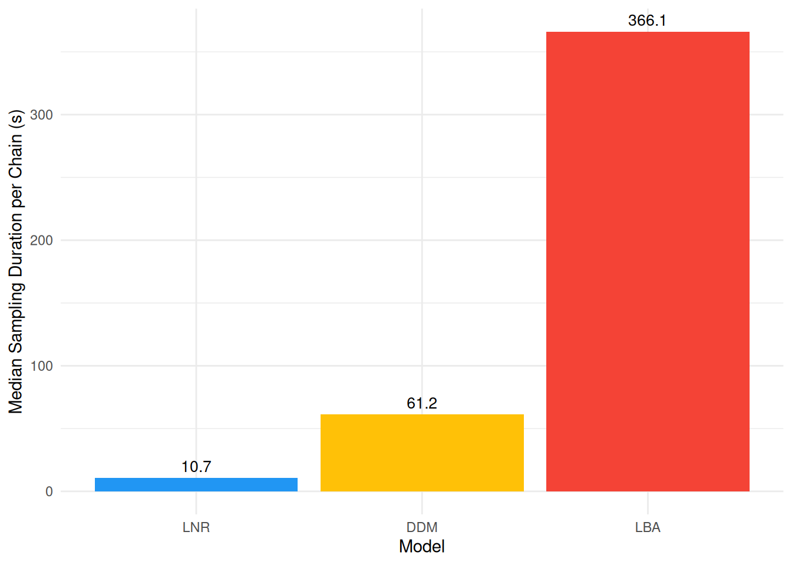

The Data
Decision making models jointly account for the choice that was made and the response time (RT) it took to make it. Rather than simulating data, we re-use the wagenmakers2008 dataset (see the RT-only Models vignette) - but this time, instead of discarding the errors, we model choice as correct vs. error responses. This is a common strategy in the decision-making literature when the task itself does not have a natural “left vs. right” stimulus category to map onto the two accumulators/boundaries of the models below.
Evidence accumulation models are considerably more expensive to sample than the RT-only models. We therefore use a smaller subset of the data here, only one participant, so that the models below can be fit in a reasonable amount of time for demonstration purposes.
set.seed(123) # For reproducibility
df <- cogmod::wagenmakers2008
df <- df[df$Participant == 1, ]
# Rename/recode columns to match the models' expected format
# df$response <- as.integer(!df$Error) # 1 = Correct, 0 = Error
# Show 10 first rows
head(df[c("Participant", "Condition", "RT", "Error")], 10)
#> Participant Condition RT Error
#> 1 1 Speed 0.700 FALSE
#> 2 1 Speed 0.392 TRUE
#> 3 1 Speed 0.460 FALSE
#> 4 1 Speed 0.455 FALSE
#> 5 1 Speed 0.505 TRUE
#> 6 1 Speed 0.773 FALSE
#> 7 1 Speed 0.390 FALSE
#> 8 1 Speed 0.587 TRUE
#> 9 1 Speed 0.603 FALSE
#> 10 1 Speed 0.435 FALSE
ggplot(df, aes(x = RT, fill = factor(Error))) +
geom_histogram(bins = 100, alpha = 0.8, position = "identity") +
facet_wrap(~Condition) +
labs(x = "RT (s)", fill = "Response") +
scale_fill_manual(values = c("darkgreen", "darkred"), labels = c("Correct", "Error")) +
theme_minimal()
Errors are much rarer than correct responses (especially in the Accuracy condition), which can be problematic for accurate estimations.
Models
All three models below use dec(Error) to indicate the two-choice outcome (0 = Correct, 1 = Error), and a fixed minrt (the minimum observed RT) to scale the non-decision time parameter tau.
Drift Diffusion Model (DDM)
The DDM assumes that evidence accumulates towards one of two boundaries at a rate mu (drift rate). bs is the boundary separation (higher = more cautious), bias is the starting point between the two boundaries (0.5 = unbiased), and tau is the non-decision time (as a proportion of minrt).
Code
f <- bf(
RT | dec(Error) ~ Condition,
bs ~ Condition,
bias ~ 1,
tau ~ 1,
minrt = min(df$RT),
family = ddm()
)
priors <- brms::set_prior("normal(0, 1)", class = "Intercept", dpar = "tau") |>
brms::validate_prior(f, data = df)
m_ddm <- brm(f,
data = df,
# prior = priors,
init = 0,
stanvars = ddm_stanvars(),
chains = 4, iter = 500, backend = "cmdstanr"
)
m_ddm <- brms::add_criterion(m_ddm, "loo") # Add model performance criterion
saveRDS(m_ddm, file = "models/m_ddm.rds")LogNormal Race (LNR)
The LNR is a somewhat simpler model. It is similar to the LBA, but each accumulator’s finishing time is drawn directly from a LogNormal distribution instead of a ballistic accumulation process. mu (nuzero) and nuone are the (inverse log-space mean) processing speeds for the “Error” and “Correct” accumulators, and sigmazero/sigmaone their log-space SDs.
Code
f <- bf(
RT | dec(Error) ~ Condition,
nuone ~ Condition,
sigmazero ~ 1,
sigmaone ~ 1,
tau ~ 1,
minrt = min(df$RT),
family = lnr()
)
priors <- brms::set_prior("normal(0, 1)", class = "Intercept", dpar = "tau") |>
brms::validate_prior(f, data = df)
m_lnr <- brm(f,
data = df,
# prior = priors,
init = 0,
stanvars = lnr_stanvars(),
chains = 4, iter = 500, backend = "cmdstanr"
)
m_lnr <- brms::add_criterion(m_lnr, "loo") # Add model performance criterion
saveRDS(m_lnr, file = "models/m_lnr.rds")Linear Ballistic Accumulator (LBA)
The LBA assumes two independent accumulators (one per choice) that race towards a common threshold b (sigmabias = start-point range A, bs = extra distance so that b = A + bs). mu and driftone are the mean drift rates for the “Correct” and “Error” accumulators, and sigmazero/ sigmaone their between-trial drift variability.
Code
f <- bf(
RT | dec(Error) ~ Condition,
driftone ~ Condition,
sigmazero ~ 1,
sigmaone ~ 1,
sigmabias ~ 1,
bs ~ 1,
tau ~ 1,
minrt = min(df$RT),
family = lba()
)
priors <- c(
brms::set_prior("normal(0, 2)", class = "Intercept"),
brms::set_prior("normal(0, 1)", class = "Intercept", dpar = "driftone"),
brms::set_prior("normal(0, 1)", class = "Intercept", dpar = "sigmazero"),
brms::set_prior("normal(0, 1)", class = "Intercept", dpar = "sigmaone"),
brms::set_prior("normal(0, 1)", class = "Intercept", dpar = "sigmabias"),
brms::set_prior("normal(0, 1)", class = "Intercept", dpar = "bs"),
brms::set_prior("normal(0, 1)", class = "Intercept", dpar = "tau")
) |>
brms::validate_prior(f, data = df)
m_lba <- brm(f,
data = df,
prior = priors,
init = 0.5,
stanvars = lba_stanvars(),
chains = 4, iter = 500, backend = "cmdstanr"
)
m_lba <- brms::add_criterion(m_lba, "loo") # Add model performance criterion
saveRDS(m_lba, file = "models/m_lba2.rds")Model Comparison
Model Fit
loo::loo_compare(m_ddm, m_lba, m_lnr) |>
report::report()
#> The difference in predictive accuracy, as indexed by Expected Log Predictive
#> Density (ELPD-LOO), suggests that '1' is the best model (ELPD = 904.58),
#> followed by '2' (diff-ELPD = -124.44 +- 14.86, p < .001) and '3' (diff-ELPD =
#> -69998.35 +- 60.98, p < .001)Sampling Duration
As with the RT-only models, we summarize each model’s sampling duration by the median time per chain. Choice+RT models are considerably more expensive to sample than RT-only models (see the RT-only Models vignette): the DDM relies on Stan’s wiener_lpdf, which is comparatively slow, while the LBA and LNR likelihoods involve evaluating both a “winner” density and a “loser” survival function for every observation.
duration <- rbind(
data_modify(attributes(m_ddm$fit)$metadata$time$chain, Model = "DDM"),
data_modify(attributes(m_lba$fit)$metadata$time$chain, Model = "LBA"),
data_modify(attributes(m_lnr$fit)$metadata$time$chain, Model = "LNR")
) |>
data_modify(Model = factor(Model, levels = c("LNR", "DDM", "LBA")))
duration_median <- aggregate(total ~ Model, data = duration, FUN = median)
duration_median |>
ggplot(aes(x = Model, y = total, fill = Model)) +
geom_col() +
geom_text(aes(label = round(total, 1)), vjust = -0.5, size = 3.5) +
labs(y = "Median Sampling Duration per Chain (s)") +
scale_fill_material_d(guide = "none") +
theme_minimal()
Posterior Predictive Check
Code
# .density_rt_response <- function(rt, response, length.out = 100) {
# rt_error <- rt[response == 0]
# rt_correct <- rt[response == 1]
# xaxis <- seq(0, max(rt_error, rt_correct) * 1.1, length.out = length.out)
#
# insight::check_if_installed("logspline")
# rbind(
# data.frame(x = xaxis,
# y = logspline::dlogspline(xaxis, logspline::logspline(rt_error)),
# response = 0),
# data.frame(x = xaxis,
# y = -logspline::dlogspline(xaxis, logspline::logspline(rt_correct)),
# response = 1)
# )
# }
#
# density_rt_response <- function(data, rt = "RT", response = "Error", by = NULL, length.out = 100) {
# if (is.null(by)) {
# out <- .density_rt_response(data[[rt]], data[[response]], length.out = length.out)
# } else {
# out <- sapply(split(data, data[[by]]), function(x) {
# d <- .density_rt_response(x[[rt]], x[[response]], length.out = length.out)
# d[[by]] <- x[[by]][1]
# d
# }, simplify = FALSE)
# out <- do.call(rbind, out)
# out[[by]] <- as.factor(out[[by]])
# }
# out[[response]] <- as.factor(out[[response]])
# row.names(out) <- NULL
# out
# }
#
# pred <- rbind(
# estimate_prediction(m_ddm, data = df, iterations = 50, keep_iterations = TRUE) |>
# reshape_iterations() |>
# data_modify(Model = "DDM"),
# estimate_prediction(m_lba, data = df, iterations = 50, keep_iterations = TRUE) |>
# reshape_iterations() |>
# data_modify(Model = "LBA"),
# estimate_prediction(m_lnr, data = df, iterations = 50, keep_iterations = TRUE) |>
# reshape_iterations() |>
# data_modify(Model = "LNR")
# ) |>
# datawizard::data_select(select = c("Row", "Component", "iter_value", "iter_group", "iter_index", "Model")) |>
# datawizard::data_to_wide(id_cols = c("Row", "iter_group", "Model"), values_from = "iter_value", names_from = "Component")
#
# dat <- rbind(
# data_modify(density_rt_response(pred[pred$Model == "DDM", ], by = "iter_group"), Model = "DDM"),
# data_modify(density_rt_response(pred[pred$Model == "LBA", ], by = "iter_group"), Model = "LBA"),
# data_modify(density_rt_response(pred[pred$Model == "LNR", ], by = "iter_group"), Model = "LNR")
# )
#
# p <- ggplot(df, aes(x = rt)) +
# geom_histogram(data = df[df$response == 1, ], aes(y = after_stat(density)), fill = "darkgreen", bins = 100) +
# geom_histogram(data = df[df$response == 0, ], aes(y = after_stat(-density)), fill = "darkred", bins = 100) +
# geom_line(data = dat, aes(x = x, y = y, group = interaction(response, iter_group)), color = "grey30", alpha = 0.1) +
# facet_wrap(~Model) +
# coord_cartesian(xlim = c(0, 2)) +
# labs(x = "RT (s)", y = "Density (top = Correct, bottom = Error)") +
# theme_minimal()
# p